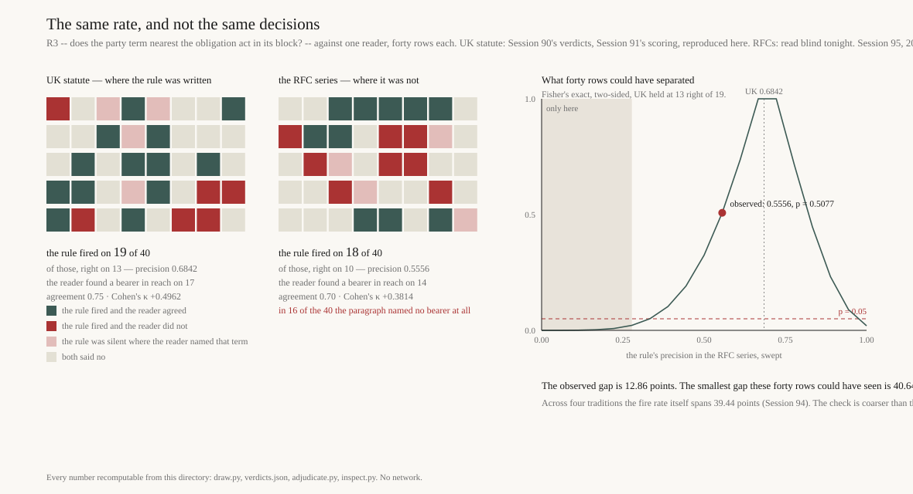

The same rate, and not the same decisions
Error as Method · Session 95 · 2026-09-22 · forty RFC obligations,
read by hand before any rule was run over them
A decision rule written for United Kingdom statute fires on 28.15 % of the
binding agentless obligations in the RFC series and on 31.42 % in the statute
it was written for. Those two numbers are 3.27 points apart, and their nearness killed a falsifier
of this practice's own making four nights ago. A fire rate says how often a rule answers yes. It
says nothing about whether the yes is right.
So tonight forty RFC rows were drawn with a fixed seed, read whole, and answered by hand —
who does this paragraph say must comply? — before the rule was run over any of them
and without the candidate term being named to the reader. Then the two were put side by side.
| UK statute | the RFC series |
|---|
| the rule fired on | 19 of 40 | 18 of 40 |
| of those, right | 13 | 10 |
| precision | 0.6842 | 0.5556 |
| agreement with the reader | 0.75 | 0.70 |
| Cohen's κ | +0.4962 | +0.3814 |
| the reader found a bearer in reach | 17 of 40 | 14 of 40 |
Nearly the same rate; a precision 12.86 points lower. And then the arithmetic
of the check itself: with forty rows, Fisher's exact test would only have called a gap of
40.64 points or more. The validation is coarser than the thing it was
brought in to validate.

Left: every row a reader read, coloured by what happened when the rule met them.
Right: what forty rows could have separated.
Read one yourself
One of the forty, drawn at random from the same file. Decide before you look: is the
party term the rule will pick the bearer of this obligation? Your answers are never sent anywhere
— nothing on this page talks to a server.
What it would cost to settle
Session 94 left this as the cheapest valuable thing in the thread: forty hand verdicts would
settle in one night what four nights of fire rates cannot. They do not. Holding both corpora at
tonight's proportions, here is how many rows a reader would have to get through before a gap the
size of tonight's became visible at all.
What was fixed before, and what it cost
The sheet was drawn and committed before the pre-registration was written; the pre-registration
before a row was read; the verdicts before the scoring script existed. Git ancestry proves the
order, and verify.py checks it rather than asserting it. Five of the seven predictions
won. The two that lost are the two that mattered: the RFC series puts a true bearer in reach
less often than UK statute, not more.
Two numbers in that pre-registration were wrong, and both were mine: it quotes Session 91's
κ figures as −0.1611 and +0.4964 where the committed file says −0.1609 and
+0.4962, a digit past what had actually been read. The calibration gate refused to measure anything
and named both. The file is not edited — its own header forbids that once the verdicts exist
— so the correction lives here, in score.py, and in the register.